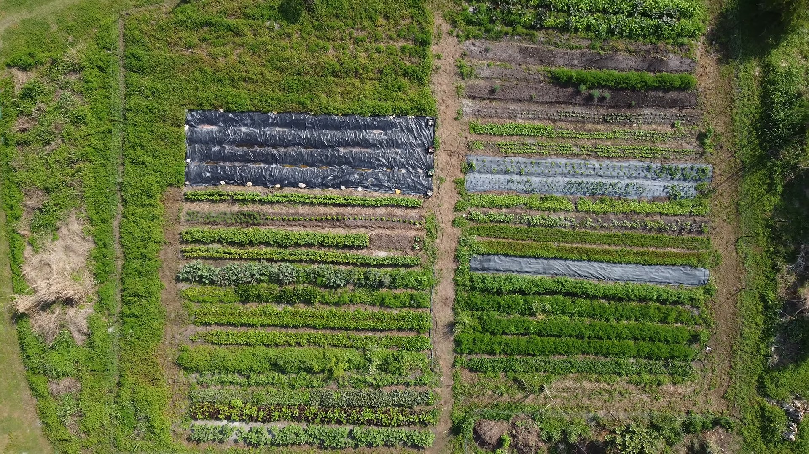

Featured Tour
Touring a Three-Year-Old Tropical Food Forest in Phoenix
Step inside a young Phoenix food forest and see how tropical fruit, thoughtful design, and careful water use can create abundance in the desert.
▶ Watch Now ▶
▶
Join us as we explore food forests, edible landscapes, and the inspiring people creating abundance through plants and food in different places.
Step inside a young Phoenix food forest and see how tropical fruit, thoughtful design, and careful water use can create abundance in the desert.
▶ Watch Now
▶
Explore food forests, edible landscapes, farms, and community gardens through the people and places that make each location unique.

South Korea Explore Tours →More locations—and an interactive world map—are coming as our tours grow.